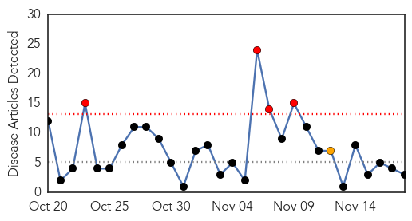
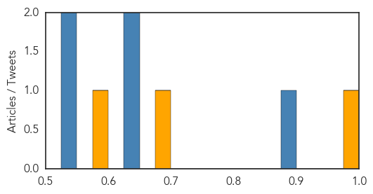
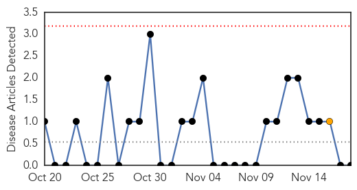

Cholera
30-Day Web Trend
4 alerts, 1 warnings

30-Day Twitter Trend
1 alerts, 0 warnings

Article Locations

Article Confidences
Top Articles:
Top Tweets:
- 0.884
- RT: Sorry, but tracing Haiti cholera epidemic's source was impt for public health, says expert NotABlameGame https://t.c…
- 0.791
- RT: It's time for some accountability in Haiti's cholera outbreak: https://t.co/bRWO47QS2d via Haiti
- 0.791
- RT: It's time for some accountability in Haiti's cholera outbreak: https://t.co/bRWO47QS2d via Haiti
- 0.711
- RT: Cholera and blame in Haiti - The Lancet Infectious Diseases https://t.co/8jIrznzwRP
- 0.711
- RT: Cholera and blame in Haiti - The Lancet Infectious Diseases https://t.co/8jIrznzwRP
- 0.593
- RT: What causes cholera? @Richard56 looks back at a victorian debate after visiting a cholera hosital https://t.co/Et2O2YfqSp
- 0.591
- RT: FaceJustice reminds the UN that the cholera epidemic affects real people, & is more than just abstract statistics: https://t.co/…
- 0.587
- RT: Int'l Assoc. of Democratic Lawyers includes Haiti cholera in their latest UN activities bulletin: https://t.co/F0rWSzs3Tb
Chikungunya
30-Day Web Trend
0 alerts, 1 warnings

30-Day Twitter Trend
0 alerts, 0 warnings

Article Locations

Article Confidences

Top Articles:
-
No articles found for Nov 18, 2015
Top Tweets:
-
No tweets found for Nov 18, 2015